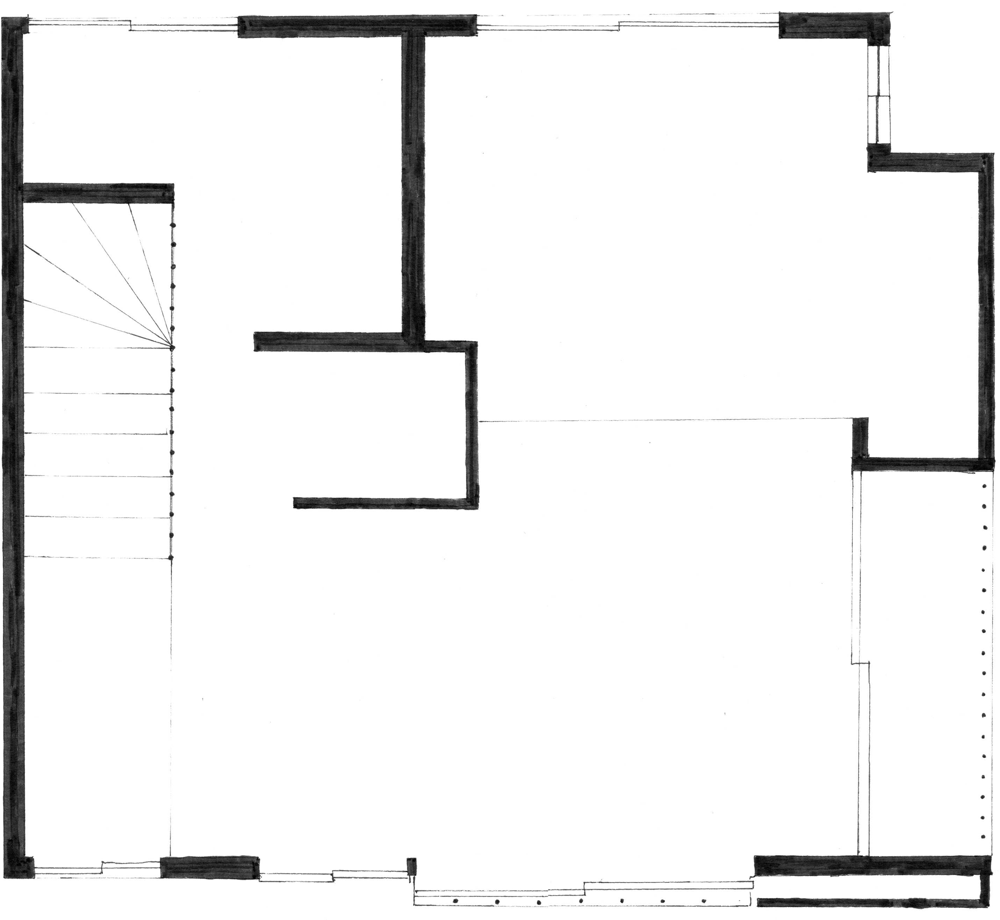

ELI HARRELL
Numabukuro Hydro-Portal
a hand ~ 2D project
Empty homes can appear as a blight, and a clear sign of a shrinking population and a dysfunctional inheritance tax. Or, these homes can be the sites of new kinds of play, gathering, and resilience already conveniently nestled in residential neighborhoods across Tokyo. This house is one such site.
click images to view them at full size.
|
Like other temperate metropolises, Tokyo faces an escalating risk of flooding as Earth warms and has prepared accordingly. From 1992 to 2006, the city built its MAOUDC project, the world's largest floodwater diversion system. Its cathedral-like subterranean overflow tanks are in Saitama, west of the city, but may as well lie deep beneath the complex of countless of subway and utility tunnels which undergird surface Tokyo. |
|
|
What if there were a way in? A place to witness water passing from the clouds high above to the earth far below? Somewhere mysterious, unmediated by a tour guide or the lens of a television documentary crew...?
Maybe here? |

|
|
This home is between a preschool and a small temple with a cemetery, where the Edo ukiyo-e painter Kuwagata Keisei and his family rests. Perched on a small rise, the alley side of this home is one story lower, affording a facade only visible from below. Only 250m south lies the canalized Myōshōji River, a small second-order tributary of the Sumida which debouches into Tokyo Bay. In intense rain, defined at 153mm/hr by the Nakano Ward Crisis Management Division, this site would sit on the limit of the floodwaters, with its alley side in the risk zone and its street side atop it. The steps between the alley and street, in such heavy rain, might appear as a weir built to slow the fall of water, which might otherwise wash away everything in the alley with its muscular cascade. |
 imagined ground (bot) and second floor (top) |
| Some neighborhood adults surreptitiously unlock the lower level's warm chamber which surrounds the shaft into the earth the roof basin drains into. |

|
| Stored high above the street, the basin sits pent, collecting rain and receiving water when demand is low or excess is available, acting as a local backup should the city pumps fail. Some hot day, maybe, its doors are flung open, and the mist within escapes, to dry laundry's chagrin and the glee of overheated passersby. |

|